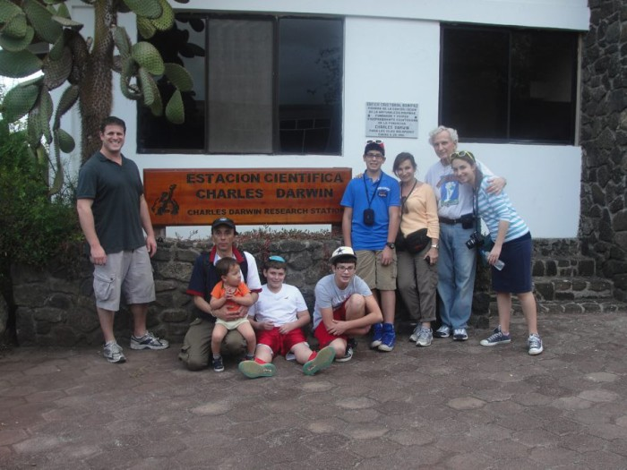
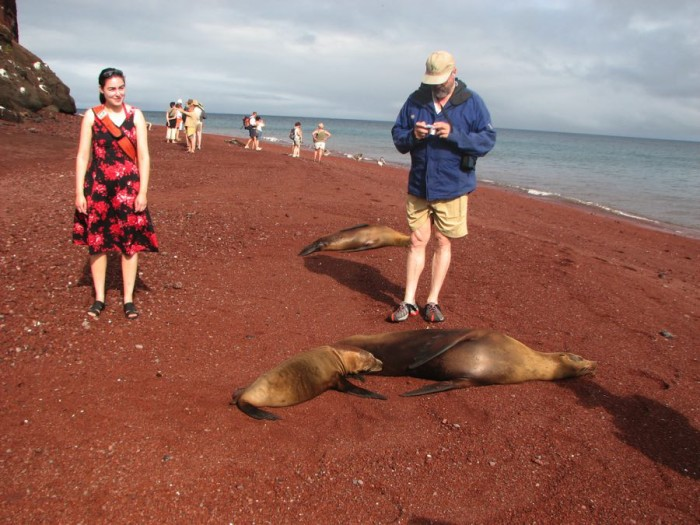
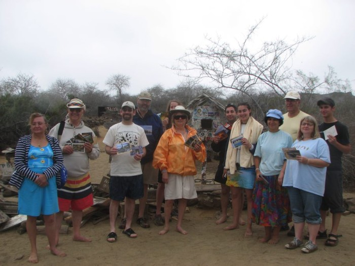
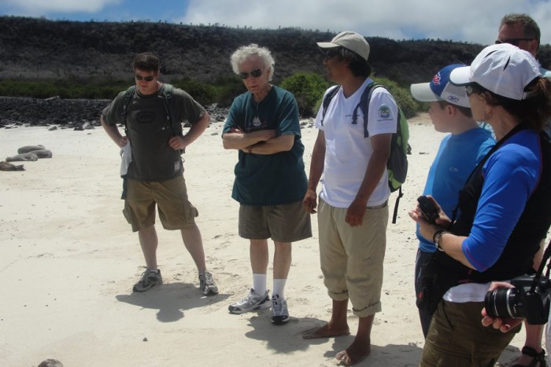

Thanksgiving in Ecuador, Galapagos Glatt Kosher departure
Supervision by a Rabbi
November 19 to 26, 2015
Since our start of operations back on 1997 a good number of religious jews travelled with us to visit the Galapagos Islands, for them trying to combine food requirements with incredible and unique visits was very difficult, due to this reason on October 2005 during a Trade Show in Manhattan organized by the Tourism Ministry where a number of searched Tour Operators that included Flashtravel Inc we decided to place for the first time Kosher tours to Ecuador and Galápagos Islands on the market.

After that successful introduction we had the visit of Uriel Heilmann from Jerusalem Post and he wrote about our service and our daughter page available those days www.ecuadoor.com which same we decided to join and make only one big site.
Since that moment we started preparing all the possible requirements that this type of tours need where we found that our country has extremely poor knowledge of the kosher service, due to this I personally travelled to Israel twice to a religious family to learn and bring all the necessary staff to make possible the realization of the First Glatt Kosher Departure. Our beloved Rabbi Leon Albin from the Orthodox Stream and with studies in Israel with Rabbi Druckman took care of the kashrut in Quito hotel and Galápagos Islands yacht.

Nowdays with the change of itineraries arranged by Galapagos National Park we have modified the original trip to a combined stay in a first class or deluxe hotel in Puerto Ayora and daily Navigations to different Islands of Interest.
Our Rabbi takes care of the Kashrut of both kitchens Quito and Puerto Ayora. For day tours in continent and daily Navigations box lunch will be given and also the preparation will be supervised by same Rabbi.
All meals are freshly cooked for each meal. Wee handle special diet restrictions, for this is extremely important that one month before your arrival we get all the information to avoid last minute surprises that maybe we can´t handle.
Chicken and meat are provided by the same Rabbi and we get a special certification with Agricultural Ministry to introduce it to the Islands. Regarding cheese our brands don´t have kosher certification, you are welcome to bring your favorite brand as far as it is properly sealed. For big groups we travel to Colombia to bring same with the correspondent certification.

Wine for Shabbat we do have imported from Israel and from Argentina.
Many products involved in preparations are imported from USA and Israel with the proper kosher certifications. Fruits and vegetables we tray most of them will be organic.
In case of fish we have plenty amount of the permitted to eat like Salmon imported from Chile, tuna, trout, sea bass, wahoo, red snapper and more.
Juices are freshly made for all meals with fruits of the season, we have plenty enough so you can enjoy our different flavors.
We do have separate menage for dairy and meat stored at an storage room and is unpacked exclusive for kosher departures. We try to keep eco friendly our services for these purpose we don´t use disposable elements except when it is extremely necessary.

At present moment with the different matters taking place around the world we are lucky that at least in our little part of the world Ecuador we have no problems with both tourists from any country or religion and also with residents. On the opposite the City Hall is trying to increase number of visitors. You can feel safe travelling with Flashtravel to our country and wearing your kipa.
We hope to be your host very soon and let us show the marvelous places we have in our country.
Sincerely,
Alexandra Barragán
Ecuador and Kosher Product Manager